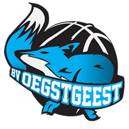
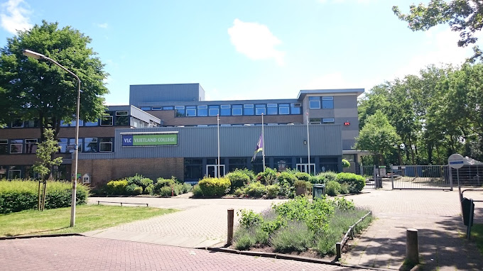
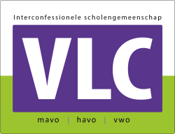

Hoi ik ben Shiwen ik ben bijna 15 jaar oud. Ik ben geboren in Leiderdorp op 1 November 2009. Mijn favorieten film is Batman want, ik hou heel erg van actie. Ik hou van wandelen en sporten. Later hoop ik piloot te worden anders wil ik mij gaan verdiepen in een leuke informatica studie. Ik kom uit Amritsar,India. Ik ben vorige vakantie daar nog geweest om familie te bezoeken het was heel leuk maar ook heel warm, soms wel 48+ graden.

Ik vind het leuk om te sporten zoals basketbal of voetbal.
Ik ben ook heel creatief en houd van tekenen of verfen.
Gamen daar kan ik ook wel wat van, ik speel vaak met mijn vrienden computergames zoals, Fortnite, Fifa en nog veel meer. Later wil ik zelf een spel programmeren.
Wandelen vind ik ook heel leuk. Dan kom je even tot rust en tot jezlef
Zelf zit ik al 5 jaar op basketbal en vind het een hele leuke sport ik speelde eerst bij Leiden en nu bij een club in oestgeest, waar ik op best hoog niveau speel.
Ik zit op het vlietlandcollege in leiden het word ook het het VLC genoemd. Ik heb dit jaar het vakkenpakket N&T gekozen= Natuur en Techniek. Mijn favorieten vakken zijn informatica en wiskune. Ik heb ook het extra vak cambridge gekozen zodat ik daar ook een diploma van krijg dat mij zal helpen in de toekomst.
Wiskunde B
Natuurkunde
Scheikunde
Engels
Nederlands
Cambridge
Maatschappijleer
Lef
Informatica
Economie
Bewegen en Sport
 